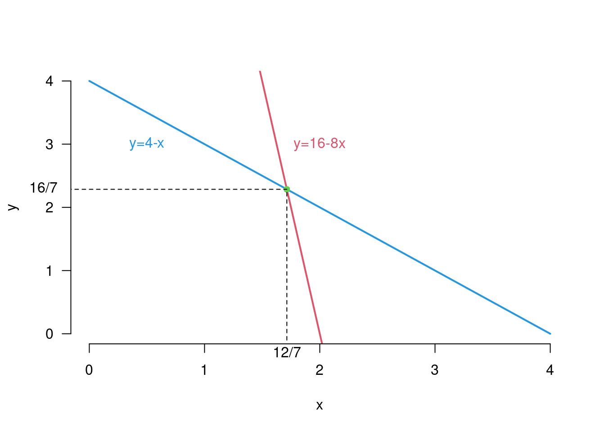

Chapter 8 Systems of linear equations
Many economic models are based on linear equation systems:
- production planning under linear resource constraints: Production constraint for two quantities \(x\) and \(y\) on Machine 1 (2 hours for a unit of \(x\) and 3 hours for a unit of \(y\)): \(2x+3y = 8\). Production constraint for two quantities \(x\) and \(y\) on Machine 2 (4 hours for a unit of \(x\) and 0.5 hours for a unit of \(y\)): \(4x+0.5y = 8\).
What is the optimal production?
- finding market equilibrium given linear demand and supply functions: Inverse demand: \(p(q)=400-0.3q\) versus inverse supply: \(p(q)=40+0.3q\).
What is the equilibrium price?
- calibrating national income models (finding equilibrium incom \(Y\) and consumption \(C\)):
\[\begin{align*} Y &= C+I+G\\ C&=C_0 +bY\\ I&=I_0+aY \end{align*}\]
for given initial investment \(I_0=50\), consumption \(C_0=65\), and government expenditures \(G=20\), as well as \(b=0.7\), \(a=0.1\).
What is the equilibrium income and consumption?
\(\leadsto\) In this Chapter, we will review the methods for solving systems of linear equations.
Definition 8.1 (Systems of linear equations) A linear equation with \(n\) variables (“unknowns”) has the form:
\[a_1x_1 + a_2x_2 + + a_nx_n = b,\]
whereby
\(a_1, ... , a_n\) and \(b\) known constants (e.g. prices), so-called parameters, are and
\(x_1, ... , x_n\) denote the variables (e.g. quantities of goods).
A system of linear equations (LGS) consists of two or more linear equations. A solution is an assignment of variables such that all equations are true/satisfied at the same time.
Example 8.1 (Linear production model) We consider an economy with \(n + 1\) goods.
Each of the goods \(1, . . . , n\) is the result of a production process.
A production process is characterized by a set of quantities of goods that are required to produce one unit of the production good.
Good \(0\) denotes the factor labor that is not produced by a process but is used in every production process.
The following input-output table shows the production process for a 3-goods economy (without the labor factor):
\[\begin{equation*} \begin{array}{l|lll} out\downarrow;~ in\rightarrow& x_1&x_2&x_3\\ x_1& 0 & 0.4 & 0.3\\ x_2& 0.2 & 0.12 & 0.14\\ x_3& 0.5 & 0.2 & 0.05 \end{array} \end{equation*}\]
The entry \(a_{ij}\) in the \(i\)th row and \(j\)th column denotes the quantity of goods \(i\) that is required to produce a unit of goods \(j\): Producing one unit of good \(2\) requires \(0.4\) units of good \(1\), as well as \(0.12\) units of good \(2\) and \(0.2\) units of good \(3\).
There is an exogenous demand for \(130\) units of good \(1\), for \(74\) units of good \(2\), and for \(95\) units of good \(3\).
What production volume meets the demand?
The solution is: the economy must produce \(300\) units of good \(1\), \(200\) units of good \(2\), and \(300\) units of good \(3\) in order to meet the exogenous demand.
8.1 Systems of two linear equations
We start with smallest LGS - LGS with just two linear equations.
Example 8.2 (LGS with two equations and two unknowns) Let’s consider the following system with two linear equations:
\(2 x + 2y = 4\) \(\rightarrow y=4- x\) (a straight line with a slope \(-1\)),
\(4x +0.5y = 8\) \(\rightarrow y=16 - 8x\) (a straight line with a slope \(-8\)).
To solve the LGS, we need at least one pair of values \((x,y)\), which satisfies both equations.
It can be shown that this holds for \(x = \frac{12}7\) and \(y = \frac{16}7\); this corresponds to the intersection of the two straight lines.
To find the intersection point, we equalize the two linear functions:
\[{\color{blue}{4-x}}={\color{red}{16-8x}}\rightarrow 7x=12\rightarrow x=\frac{12}7\rightarrow y=4-\frac{12}7=\frac{16}7.\]

For \(x = 1\) and \(y = 3\) the first equation is fulfilled, but the second is not; this pair of values is therefore not a solution of the system.
8.1.1 Solution by substitution and elimination
Theorem 8.1 (Number of solutions in a two-equation LGS) A system with two linear equations has either
- no solution,
- exactly one solution or
- infinitely many solutions.
Graphically this means: Two straight lines can…
- … never intersect;
- …intersect exactly once;
- … agree on all points.
Given a system with two linear equations:
\(ax + by = c\)
\(dx + ey = f\) ,
where \(a, b, c, d, e, f\) are known constants.
We consider two different methods to solve this system.
1. Substitution:
- Solving the first equation for \(x\) (if \(a\neq 0\)):
\[ x= \color{red}{\frac{c}{a} - \frac{b}{a} \cdot y}. \]
- Substituting/substituting the expression for \(x\) into the second equation to find a solution for \(y\) (if \(ae-bd \neq 0\)):
\[ d\left( \color{red}{\frac{c}{a} - \frac{b}{a} \cdot y}\right)+ey=f \ \Rightarrow \ y= \frac{af-cd}{ae-bd}. \]
- Substituting back into the first equation gives:
\[ x= \frac{ce-bf}{ae-bd}. \]
Example 8.3 (Solving via substitution) Let’s consider the following LGS:
\[5x + 2y = 3,\]
\[−x − 4y = 3.\]
Rearranging the second equation gives:
\(x = −3 − 4y\).
Substituting into the first equation gives:
\(5(−3 − 4y) + 2y = 3\Leftrightarrow −15 − 18y = 3\Leftrightarrow y = −1\), and
\(x = −3 − 4y = −3 + 4 = 1\).
2. (Gaussian) elimination:
- One or both equations are multiplied by a constant in order to adjust the coefficients associated with \(x\) and \(y\):
\[a{\color{red}{d}}x + b{\color{red}{d}}y = c{\color{red}{d}},\]
\[{\color{blue}{a}}dx + {\color{blue}{a}}ey = {\color{blue}{a}}f.\]
- Next, subtract the two equations to eliminate one variable:
\[(ae − bd)y = af − cd.\]
- Then, one solves the system for the remaining variable (if \(ae-bd \neq 0\)):
\[ y= \frac{af-cd}{ae-bd}, \]
- and computes the value of the eliminated variable:
\[ x= \frac{ce-bf}{ae-bd}. \]
Example 8.4 (solving via elimination) Consider again the following LGS: \[5x + 2y = 3,\]
\[−x − 4y = 3.\]
Scaling the first equation by 2 gives
\[10x + 4y = 6,\]
\[−x − 4y = 3.\]
Next the two equations are added:
\(9x = 9\)
Eliminating \(y\) yields \(x = 1.\)
Substituting this result into the second equation, we get
\(−1 − 4y = 3\), so that
\(y = −1\) must hold.
8.2 Systems of equations with \(n\) linear equations
We now generalize the results to \(n\) variables.
A system consisting of \(m\) equations and \(n\) unknowns/variables is given as follows:
\[\begin{align*}a_{11}x_1 + a_{12}x_2 + ... + a_{1n}x_n &= b_1,\\ a_{21}x_1 + a_{22}x_2 + ... + a_{2n}x_n &= b_2,\\ \ldots\\ a_{m1}x_1 + a_{m2}x_2 + ... + a_{mn}x_n &= b_m. \end{align*}\]
The \(a_{ij}\) and \(b_i\) are real numbers, where \(a_{ij}\) denotes the coefficient of the unknown variable \(x_j\) in the \(i\)-th equation.
A solution of the system is an \(n\)-tuple of real numbers \(x_1, x_2, ... , x_n\) that satisfies each of the \(m\) equations simultaneously.
Regarding LGS, we are interested in the following three questions:
- Is there a solution?
- How many solutions are there?
- Is there an efficient algorithm that can calculate the solution(s)?
There are three main ways to solve an LGS:
- substitution;
- elimination of the variables;
- matrix method (\(\leadsto\) next chapter).
The theorem from the last section can be generalized to the case with \(n\) variables:
Theorem 8.2 (Solution set of an LGS with m equations and n unknowns) A system with \(m\) linear equations and \(n\) unknowns either has no solution, exactly one solution, or infinitely many solutions.
8.2.1 Solving systems of equations with \(m\) linear equations
Solving a system with \(m\) linear equations using Substitution:
Solve an equation of the system for one variable, e.g. \(x_n\), so that \(x_n\) can be written as an expression of the other variable.
Substitute this expression for \(x_n\) in the remaining \(m − 1\) equations.
The result is a new system consisting of \(m − 1\) equations with \(n − 1\) unknowns.
This process is continued by solving another equation for \(x_{n−1}\), etc.
This procedure is repeated until a single equation remains that can be easily solved.
Example 8.5 (Linear production model) Example 8.1 cont.
- The following input-output table shows the production process for a 3-goods economy (without the labor factor):
\[\begin{equation*} \begin{array}{l|lll} out\downarrow;~ in\rightarrow& x_1&x_2&x_3\\ x_1& \color{red}0 & \color{red}{0.4} & \color{red}{0.3}\\ x_2& \color{blue}{0.2} & \color{blue}{0.12} & \color{blue}{0.14}\\ x_3& \color{green}{0.5} & \color{green}{0.2} & \color{green}{0.05} \end{array} \end{equation*}\]
It gives the system of equations:
(1.) \(x_1 = \color{red}{0}\cdot x_1 + \color{red}{0.4}x_2 + \color{red}{0.3}x_3 + 130,\)
(2.) \(x_2 = \color{blue}{0.2}x_1 + \color{blue}{0.12}x_2 + \color{blue}{0.14}x_3 + 74,\)
(3.) \(x_3 = \color{green}{0.5}x_1 + \color{green}{0.2}x_2 + \color{green}{0.05}x_3 + 95.\)
Solving by substitution
Bringing all the variables to the left side gives the system:
(4a.) \(x_1 − 0.4x_2 − 0.3x_3 = 130,\)
(4b.) \(−0.2x_1 + 0.88x_2 − 0.14x_3 = 74,\)
(4c.) \(−0.5x_1 − 0.2x_2 + 0.95x_3 = 95.\)
Solving equation (4a.) for \(x_1\) results in:
(5.) \(x_1 = 0.4x_2 + 0.3x_3 + 130\).
Substitution in (4b.) and (4c.) yields:
\(−0.2(0.4x_2 + 0.3x_3 + 130) + 0.88x_2 − 0.14x_3 = 74,\)
\(−0.5(0.4x_2 + 0.3x_3 + 130) − 0.2x_2 + 0.95x_3 = 95\).
This can be simplified to:
(6a.) \(0.8x_2 − 0.2x_3 = 100,\)
(6b.) \(−0.4x_2 + 0.8x_3 = 160.\)
This subsystem is now also solved by substitution; (6a.) yields:
(7.) \(x_2 = 125 + 0.25x_3\)
and insertion into (6b.) yields:
\(−0.4(125 + 0.25x_3) + 0.8x_3 = 160,\)
\(x_3 = 300\).
Substituting x\(_3 = 300\) in (7.) gives \(x_2 = 200\).
Substituting \(x_2 = 200\) and \(x_3 = 300\) in (5) yields \(x_1 = 300\).
It follows that the economy must produce \(300\) units of good \(1\), \(200\) units of good \(2\), and \(300\) units of good \(3\) in order to meet the exogenous demand.
Solving a system with \(m\) equations using Gaussian elimination:
Using the coefficient for \(x_1\) in the first equation, the \(x_1\) term is eliminated from all equations below/below;
To do this, a suitable multiple of the first equation is added to each of the following equations.
In the following, the first equation is ignored. From the remaining \(m − 1\) equations, the next variable, \(x_2\), is then eliminated.
If \(x_2\) is not contained in the second equation but is contained in another equation, the two equations are exchanged.
The elimination of variables is carried out until only one equation remains.
The simplified system can now be solved by substitution.
Example 8.6 (Linear production model) Example 8.5 cont.
We solve the system of equations (4a)-(4c) using Gauss elimination:
(8a) \(x_1 − 0.4 x_2 − 0.3 x_3 = 130\)
(8b) \(−0.2x_1 + 0.88x_2 − 0.14x_3 = 74\)
(8c) \(−0.5x_1 − 0.2x_2 + 0.95x_3 = 95\)
To eliminate \(x_1\), a suitable multiple of the first equation is added to the second and third equation.
More precisely: (8a) is multiplied by \(0,2\) and added to (8b); this gives:
\(0.8x_2 − 0.2x_3 = 100\).
Similarly, adding \(0.5\) times (8a) to (8c) results in:
\(−0.4x_2 + 0.8x_3 = 160\).
The result is the following simplified system:
(9a) \(x_1 − 0.4x_2 − 0.3x_3 = 130\)
(9b) \(0.8x_2 − 0.2x_3 = 100\)
(9c) \(−0.4x_2 + 0.8x_3 = 160\)
Now \(x_2\) is eliminated from the second equation: Multiplying (9b) by \(0.5\) and adding to (9c) gives:
(10a) \(x_1 − 0.4x_2 − 0.3x_3 = 130\)
(10b) \(0.8x_2 − 0.2x_3 = 100\)
(10c) \(0.7x_3 = 210\)
Finally, by back substitution / back substitution we get:
\(x_3 = 300, x_2 = 200\) and \(x_1 = 300\).
Why is the elimination method permissible?
More precisely: What operations can be performed in an LGS without changing the solution of the equations?
The addition of a multiple of one equation to another, as it has been applied several times, e.g. in the transition from (8b) to (9b), is reversible, …
… e.g. (8b) can be restored from (9a)–(9c) by adding \(−0.2\) times (9a) to (9b).
Overall, the following three operations, so-called elementary equation operations, can be used to solve an LGS:
- Addition of a multiple of one equation to another;
- Multiplication of both sides of an equation with a scalar (\(\neq 0\));
- Interchanging two equations.
Because of the reversibility of these operations, every solution of the transformed system is also a solution of the original system.
This following variant is the Gauss-Jordan Elimination:
- As soon as all elimination steps of the Gaussian elimination have been carried out, instead of the back substitution, another elimination step is carried out, this time from the bottom up. This then provides the final solution.
Example 8.7 (Linear production model) Examples 8.1 und 8.6 cont.
Consider again the linear production model, which after elimination has the following form:
(11a) \(x_1 − 0.4x_2 − 0.3x_3 = 130\)
(11b) \(0.8x_2 − 0.2x_3 = 100\)
(11c) \(0.7x_3 = 210\)
Instead of back substitution, elimination is performed from below.
First, each equation is scaled such that the first non-zero coefficient is even \(1\): (e.g. by dividing (11c) by \(0,7\)):
(12a) \(x_1 − 0.4 x_2 − 0.3x_3 = 130\)
(12b) \(x_2 − 0.25x_3 = 125\)
(12c) \(x_3 = 300\)
Next \(x_3\) is eliminated from (12b) by multiplying (12c) by \(0.25\) and adding (12c) to (12b); this gives:
(13a) \(x_1 − 0.4x_2 − 0.3x_3 = 130\)
(13b) \(x_2 = 200\)
(13c) \(x_3 = 300\)
Similarly, \(x_2\) and \(x_3\) are eliminated from (13a) by multiplying \(0,3\) times (13c) and \(0,4\) times (13b). (13a) added; finally one gets:
(14a) \(x_1 = 300\)
(14b) \(x_2 = 200\)
(14c) \(x_3 = 300\).
Exercise 8.1 (machine runtime) Three different products are made with three different machines.
The running times (in hours) of the machines to produce each unit of each product are as follows:
\[\begin{equation*} \begin{array}[t]{l|ccc} \hline % & P_1 & P_2 & P_3\\\hline M_1 & 2 & 2 & 2\\ M_2 & 3 & 4 & 1\\ M_3 & 6 & 10/3 & 2/3\\\hline \end{array} \end{equation*}\]
If all the machines run 8 hours a day, how many units of each product can be made in a day?